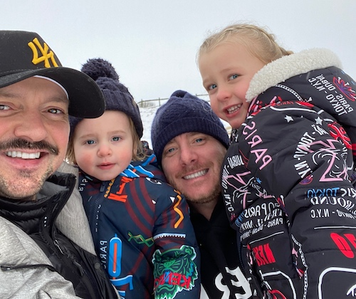
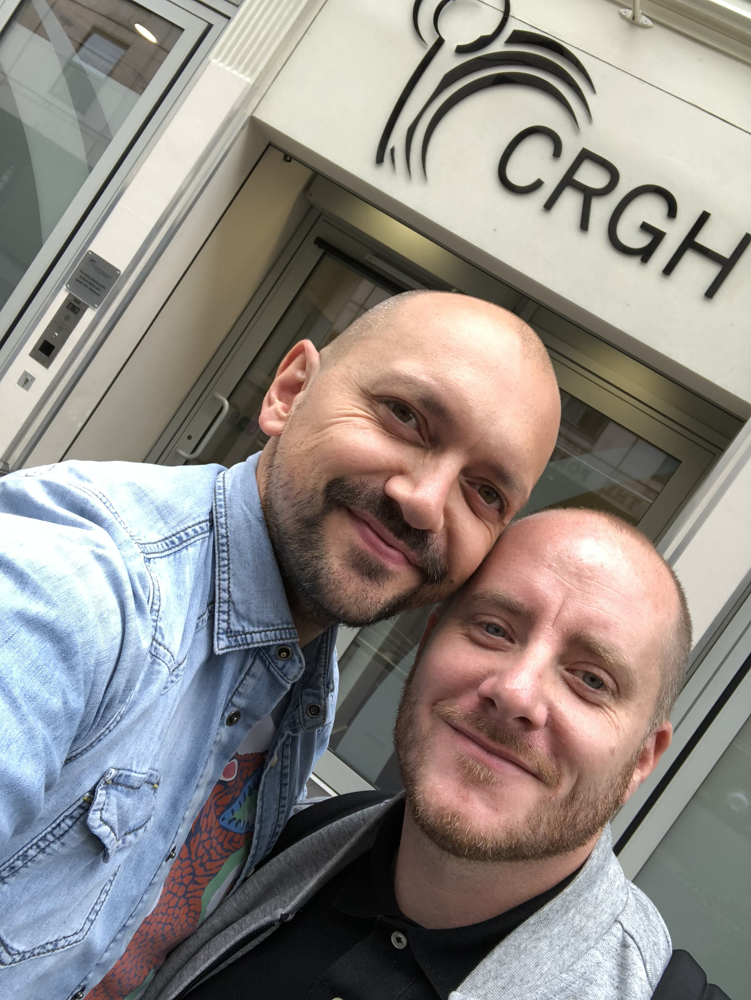
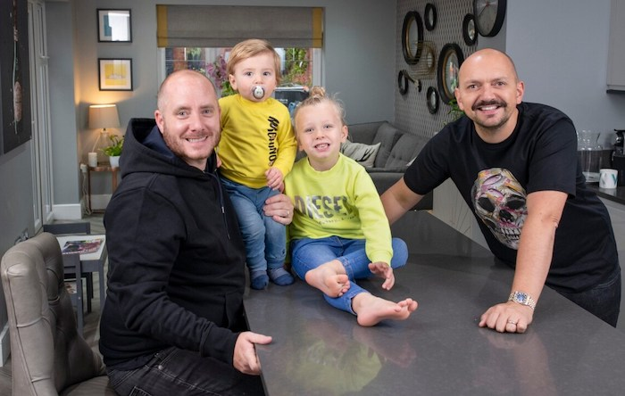

Our Story
-

When Michael and Wes began their journey in 2014, the demand on other not-for-profit organisations meant they had to explore independent UK Surrogacy due to extensive waitlists and shortages or surrogates.
They dived deep into the online Surrogacy communities, made a tonne of friends and contacts and began learning more about Surrogacy. The do’s and don’ts, the clinics who genuinely specialise in Surrogacy, Egg Donor wait lists, the current Law and the reform, the Parental Order process and the limited amount professional counselling available for all those on a journey. It was clear there was an opportunity to combine technology with support, and to also bring together a team of Fertility and Surrogacy experts. Contacts that have been nurtured, to form one of the most admired Advisory Boards for a UK Surrogacy Not for Profit organisation, ensuring every member is supported equally and has a voice.
Included are several UK firsts for a UK Surrogacy organisation such as eight hours of emotional support including professional BICA counselling throughout the entire journey, Our Partnerships are equally as important, and again have been built up based on mutual respect and similar objective to help support those on a journey to parenthood. Our pre-conception genetic testing to New-born screening, offered from Igenomix. An extensive educational and document library covering all aspects of the journey, which goes beyond the birth, will ensure that all parties are medically, emotionally and legally informed.
All Intended Parents also receive home Sperm Testing kits via ExSeed, the leading testing and fertility improvement kit designed to further support and help encourage men to speak up and get fit for fertility. My Surrogacy Journey has also partnered with Fenomatch, Facial Recognition software which compares over 12,000 biometric measurements to find the donor with the greatest facial resemblance to the Intended Parents, taking known egg donor matching to new levels, never seen before in the UK.
Intended Parents also receive membership to The Donor Conception Network and will also be enrolled in tailored antenatal classes by leading birthing experts. Our own specialist e-Midwife will also help guide and support those on their journey too. The Doula Association will be working with IP’s with virtual postnatal support, answering all the important questions – right when you need it.
To ease the pressure on fertility clinics, we have partnered with EngagedMD, a consent platform ensuring complex HFEA consents are captured as part of the membership process with My Surrogacy Journey – allowing clinics to concentrate more on patient care, thus being more efficient.
We have even partnered with The Mindful Birthing Group to offer Surrogates and Intended Parents a birthing support package which includes on online support programme as well as a virtual birthing session.
You see – we’ve thought of everything.
Our Values
By making all our members equal we ensure that every relationship is balanced - neither party should feel more in control. Everyone is on this journey together.
MSJ has been designed to support and guide the individual needs of anyone wanting to build a family. Our memberships are tailored to same sex, heterosexual, solo and LGBTQ intended parents
A successful and responsible surrogacy journey relies on everyone involved being emotionally, legally, and medically informed. We are committed to ensuring that all parties are educated about every single step in the process.
MSJ will provide you with all the necessary information and range of options open to you so that you can make the right decision for you based on your personal needs.
MSJ has been created by people who have been intended parents, surrogates and known egg donors. We have poured our experience, the highs and the lows, into designing a trusted home for anyone wanting to build a family through surrogacy. And will only work with trusted experts in surrogacy. We advocate for surrogacy agreements which are built on trust, respect, friendship and partnership. Basically, it is ALL about TRUST.
We insist that all parties involved in MSJ agree to full transparency and will always provide updates when requested. No one should never feel left in the dark or as if they can’t ask a question.
he world of fertility technology is changing rapidly. We have partnered with providers in some of the latest technology so that our members can benefit from recent innovations. The way the world communicates has already changed beyond recognition in one year. We have built a platform that harnesses this change to maximise our members’ ability to communicate.
Our Mission
It’s all about our Members.
Our commitment is to ensure we define a parental pathway through Surrogacy that is trusted, professional and supported every step of the way. The unrivalled levels of counselling and practical support from a network of surrogacy professionals and experts, medics and clinicians, combined with some of the latest technology platforms in the Fertility industry, is a first in the world of surrogacy.
We’ve considered everything. This is your journey.
Our Team
Meet some of the faces responsible for ensuring you have a supported journey to parenthood. We’re looking forward to meeting you.
Wes Johnson-Ellis
(Founder & LGBTQ IP Coordinator)
Francesca Steyn
(Founder & Fertility Nurse Specialist & Clinical Lead)
Anna Buxton
(Hetero IP and International Surrogacy Coordinator)
Kellie Lombard
(Membership Sales UK and Europe)
Gina Kinson
(Surrogate Coordinator)
Tracey Sainsbury
(Senior Fertility Counsellor)
John Lippitt
(Senior Fertility Counsellor)
Kellie DaSilva
(Fertility Mentor)
Michael Johnson-Ellis
(Founder & Business Development and Marketing Director)
Advisory Board
Andrew Spearman
Head of Family Law, Laytons LLP
Andrew is a specialist Fertility and Surrogacy lawyer at Laytons LLP and a recognised leader in the field of legal parenthood for the UK and LGBT+ Families. He undertakes extensive work with clients to help them navigate the legal complexities to becoming a parent and is frequently in the High Court advancing case law for the best interests of the child, intended parents and surrogate alike.
Andrew is best known for his work particularly with LGBT+ parents and is a prominent advocate for their rights and equal treatment, recently being in the Court of Appeal and Supreme Court on issues of transgender parenthood. He is regularly seen at events providing information seminars to IPs and other fertility professionals to share knowledge and he is involved with surrogacy charities to support the community.
Anna Buxton
International Intended parent
Anna’s journey to motherhood was far more complicated and painful that she had ever realised was possible.
Two missed miscarriages and subsequent surgeries to remove the pregnancies left Anna with severe scarring of the womb - a condition known as Asherman’s Syndrome - so the lining necessary to maintain a pregnancy couldn’t develop. Five operations over 18 months failed to correct the scarring and Anna was told that she would never be able to carry a pregnancy.
Anna and Ed therefore turned to surrogacy and began researching the options at home and abroad. Awfully long waiting times to be matched with a surrogate, meant that Anna and Ed decided to go abroad, and Isla was conceived and born in India. For their sibling journey, they decided to go to America and the twins were born in the summer of 2018.
Both journeys highlighted to Anna the complexities of international surrogacy and the challenges of trying to manage those journeys unassisted. Anna decided not to return to her job in financial services after her children were born so that she could support other people on their journey to parenthood through surrogacy
Anna has worked with the San Diego Fertility Center where her twins were born to help couples navigate surrogacy in the US and now works for My Surrogacy Journey.
Carol Gilling-Smith MA (Cantab), FRCOG, PhD
Medical Director & CEO, The Agora Clinic
Carole is the CEO, Medical Director and founder of the Agora Clinic in Hove, the largest Fertility Clinic in Sussex offering both NHS and privately funded treatment. She is a Consultant Gynaecologist with particular expertise in Fertility and Reproductive Medicine. She graduated in Medicine from Cambridge in 1984 and completed a PhD thesis during her specialist training. She has a diverse research portfolio and continues to publish and lecture nationally and internationally on a wide range of fertility related topics. She pioneered the first fertility program for patients in the UK living with HIV and remains an international expert in this field.
Francesca Steyn
Co-founder & Fertility Nurse Specialist RGN
Francesca is one of the UK’s leading Fertility nurse specialists with over 15 years of experience and has a special interest in Surrogacy and gamete donation. Francesca’s enthusiasm for Fertility Nursing has taken her all over the globe, presenting at national and international conferences and sharing best practices whilst educating like-minded Nurses about the importance of Fertility Nursing, training and development for fertility nurses and sharing her experience of managing surrogacy programmes. Francesca has worked for some of London’s leading Fertility Clinics and established Surrogacy teams which have since developed into award winning services. She was awarded surrogacy fertility professional of the year in both 2018 and 2019 and has been heavily involved in the campaigning for change for surrogacy, writing national guidelines and contributed to the UK Surrogacy Law Reform which was led by All Party Parliamentary Group for surrogacy (APPG). Francesca has recently been appointed as Chair elect for the Royal College of Nursing Fertility Nurses Forum which is a major fertility stakeholder group and the leading voice for fertility nursing staff in the UK . Francesca also has personal experience as an egg donor, in 2018 she donated her eggs to friends and now colleagues, Michael and Wes which resulted in the birth of Duke in 2019.
Gina Kinson
Hope Surrogacy
I'm married to Ian and have 3 children Ellie 24, Alex 19 and Samuel 14. I live in a beautiful part of Kent called the Weald which is just south east of London. I work for the NHS in Rapid Response which is an emergency nursing team that treat people in the community and keep them out of hospital. 6 years ago a friend of mine wrote a book about his Journey to become a parent and I was so touched by how incredible the whole process was that I took my first steps into Surrogacy.
I have since carried 2 little girls for a wonderful couple, been part of the consultations for Surrogacy Law changes and won an award for raising Awareness about Surrogacy.
I currently help run a Support Group for IPS and Surrogates living in the UK providing information, help and advice for those going through a Journey.
I am passionate about making sure that everyone involved in surrogacy is armed with the knowledge, understanding and respect needed to complete and support a successful journey.
Hilary Smith
International Client Relations, UK & Europe Extraordinary Conceptions Surrogacy & Egg Donation
Hilary is the International Client Relations Consultant for Extraordinary Conceptions Surrogacy & Egg Donation Agency. Based out of the UK, part of Hilary's role is to support, educate and guide intended parents from across Europe through the surrogacy and egg donation process in North America, as well as to develop and grow more accessible options internationally. Hilary has over 15 years of nursing experience with almost a decade in reproductive health and infertility. Her passion for this very specific area of fertility began almost a decade ago when she worked as a Surrogacy and Donor Nurse Coordinator at a busy clinic in Toronto, Canada. Hilary managed all aspects of the IVF cycle for her patients and assisted international intended parents, surrogates and their egg donors through the entire process. Over the years, her role on the international team allowed her to travel to several different countries to help educate intended parents worldwide on their family building options through surrogacy and egg donation.
Hilary's passion to assist more intended parents inspired her to relocate to the United Kingdom where she has continued her work to help create more accessible programs for the many intended parents around the world who require a surrogate or donor to have a child.
James Lawford Davies
Partner, Hill Dickinson LLP, Quality Compliance
James is a specialist life sciences regulatory lawyer and litigator. He has a particular specialism in the regulation of assisted reproduction and embryo research. He advises a large number of clinics, hospitals, universities and research centres licensed by the Human Fertilisation and Embryology Authority (HFEA), the Human Tissue Authority (HTA) and the Care Quality Commission (CQC). He also advises pharmaceutical and medical device companies regulated by the Medicines and Healthcare products Regulatory Agency (MHRA).
James has been involved in most of the leading cases relating to IVF, embryo research, genetics and stem cell research.
John Lippitt
Senior Fertility Counsellor BICA Member
John qualified as a counsellor in 2003 and has worked at the Hewitt Fertility Centre in Liverpool since 2011. As well as offering therapeutic and implications counselling to individual patients and couples, he is responsible for managing the clinic's patient support group; he has also been a guest speaker at local and national fertility training events. John is a member of the British Infertility Counselling Association and a registered member of the British Association for Counselling and Psychotherapy. Alongside his work in the fertility field he holds a counselling post at Alder Hey Children's Hospital.
Kelly Da Silva
The Dovecote Organisation
Kelly Da Silva is a Fertility Support Expert, Writer, Speaker, and Founder of The Dovecote: Childless Support Organisation. Inspired by her own personal experience of infertility, Kelly specialises in developing and delivering ‘Emotional Support’ for those experiencing infertility either during treatment or in their own childless journey.
Working with a leading UK Fertility Provider, Kelly has developed and continues to deliver a range of emotional and support offerings to improve the ‘Patient Experience’ to a level recognised by the HFEA as a ‘Gold Standard for Support’, using the knowledge, strategies, research and tools attested through her own personal journey. Kelly also shares best practice at conferences, speaks at events and provides consultancy and training to other fertility clinics and professionals and has worked with the Royal College of Nursing to write clinical guidance on patient support.
As Founder of The Dovecote: Childless Support Organisation, Kelly’s passion has also driven her to offer a range of support to those navigating their own childless journey including a global online community where people can connect with others dealing with the challenges of infertility and childlessness, mentoring, 1-2-1 support and online workshops. She also helps to raise awareness of the challenges of fertility and childlessness by being a leading voice in this area and often speaking in the media and at events about this topic
Dr Kirsty Horsey
Director of Education, Reader in Law, Kent Law School, University of Kent
Kirsty Horsey is a Reader in Law at Kent Law School, University of Kent. She has been interested in and actively researching surrogacy law – and advocating its reform – for over 20 years. She has written numerous book chapters and articles on surrogacy in the UK, including publications in both academic and public-facing journals
Lyndon Miles
BSc, MSc, Dip Clin Embryol, DipRCPath – Consultant Embryologist
Director & Consultant, Embryologist at Center of Reproduction and Gynaecology Wales & West
Lyndon has worked in this field for over 25 years. He has extensive experience from working in six IVF clinics, including six years as Senior Embryologist and Harvard Instructor at Brigham & Women’s Hospital, Harvard Medical School, Boston, USA. He is currently the director of the Centre for Reproduction and Gynaecology Wales & West (CRGW) a group of fertility 4 clinics in Wales and England.
Nina Barnsley
Director of Donor Conception Network
Nina has been a Director at Donor Conception Network since 2014. Donor Conception Network is a charity offering support and information to anyone considering donor conception (with or without surrogacy) as well as parents of children conceived this way and donor conceived children and young people. They do this through membership, a website, publications, workshops, the DCN Journal and telephone and email helplines. The organisation is parent-led and child-focussed, helping people with the social and emotional aspects of creating or expanding a family through donor conception
Richard B. Vaughn, Esq.
Founder, International Fertility Law Group Inc.
Fertility law attorney Rich Vaughn combined his passion for family formation with over 20 years of experience in business and technology law and founded International Fertility Law Group (IFLG), one of the most successful and best-known law firms in the world focusing on assisted reproductive technology law.
Rich Vaughn first studied reproductive and fertility law at Loyola University Chicago School of Law in the early 1990s. In 1993, Rich began providing litigation, contract, technology, marketing and corporate legal services to individual clients, companies and municipalities in Chicago and Los Angeles. During his own experience of becoming a parent via egg donation and surrogacy, Rich discovered a renewed passion for fertility law and launched IFLG, which focuses exclusively on assisted reproductive technology legal services. Since then he’s had the opportunity to help thousands of intended parents from all over the world create families via assisted reproduction.
In addition to his busy legal practice, Rich devotes numerous volunteer hours to advancing the field of ART law and is a dedicated advocate for LGBT intended parents and families. He is immediate past chair of the American Bar Association (ABA) Family Law Section Committee on Assisted Reproductive Technology, which played a leading role in developing model legislation to assist states in regulating assisted reproductive technology medical providers and donor and surrogacy agencies. He is a founder of and speaker at the first Cambridge University International Surrogacy Symposium held in June 2019. He served on the National Board of Path2Parenthood (formerly American Fertility Association) and is an active member of the California Bar Association (CBA) and its Family Law Section, the American Society for Reproductive Medicine (ASRM) Legal Professionals Group, and the National LGBT Bar Association. He has been published in numerous professional journals, including the American Bar Association’s SciTech Lawyer, for which he also served as issue editor, International Family Law Journal, Family Law Review, American Journal of Fertility Law and the Australian Family Law Journal; he has presented at numerous legal and family-building conferences around the U.S., including Yale University School of Law and California Western School of Law; and he has been cited as a fertility law expert in numerous reports, including The Washington Post, CNN, National Public Radio (NPR), Parenting Magazine Live, and The ABA Journal, to name a few. Away from the office, Rich is a proud advocate for LGBT equality and gay and lesbian parenting as a member and supporter of the Family Equality Council and provides community service in the medical, health and wellness industries. He is also an experienced fitness instructor, triathlete, a former paramedic, and board member of a medical device company. In 2008, Rich and his spouse, Tommy Woelfel, were married in California and became the proud parents, through egg donation and surrogacy, of twin sons Aiden and Austin
Sophie Martin
Registered Midwife and The infertile Midwife
Sophie Martin is a Registered Midwife and has worked in a Central London hospital for the past eight years. One of her special interests is antenatal education, and she regularly teaches on antenatal courses. She has written for the Royal College of Midwives Magazine, alongside blog posts, and appearing on Radio and podcasts.
She is enthusiastic about supporting families through non-traditional routes to parenthood, including surrogacy.
Sophie has personal experience of fertility treatment, having undergone 6 rounds of IVF herself.
Tracey Sainsbury
Senior Fertility Counsellor, BICA Accredited
Tracey Sainsbury is a specialist fertility counsellor providing support to individuals and couples; with over 20 years’ experience of providing fertility support, she is an Accredited member of both the British Infertility Counselling Association and the National Fertility Society. Tracey is also a member of the Advisory Panel for Fertility Network UK and served a three-year tenure with the BICA Executive Committee, promoting best practice in counselling provision and patient care.
Tracey has a keen interest in Interpersonal Neurobiology, including Epigenetics, which reinforces the importance of pregnancy around pre-birth attachment and familial attunement; promoting the importance of being comfy in your surrogacy team before conception. Our unconscious makes the highs higher and lows lower, which without support can leave us feeling isolated and / or overwhelmed; Tracey believes that fertility counselling throughout the pathway to parenthood and beyond promotes self-compassion and enhanced communication in relationships, especially between IP and Surrogates, and often known donors too, in addition to our personal relationships with partners and family.
Our Partners
Our Partnerships are an essential component of our Membership. Built on trust and transparency, we have carefully and sensitively created benefits which are as individual as our members personal fertility journey. From Genetic screening to new-born testing all the way through to birth preparation and doula support. We want to ensure this is a journey enjoyed by everyone, with services provided by those that authentically care.
The Doula Association
Supporting Intended Parents, post Birth giving you the confidence and guidance as a new parent. Helping Surrogates from a post birth recovery and wellbeing perspective
EngagedMD
Managing elements of your treatment consents designed to make everything easier, and seamless for all members and possibly clinics
ExSeed
Providing Members with Home Sperm Test Kits, to help you understand your fertility and get fit for treatment
Fenomatch
Fertility Tech at its finest. Scanning 12,000 facial points matching you with a Donor with the most likeness to one of the Intended Parents.
Igenomix
Providing genetic screening from conception, including carrier testing as standard, all the way through to pregnancy screening and newborn genetic testing
The Mindful Birth® Group
Supporting Intended Parents and Surrogates virtually during the birthing process
Mini First aid
Providing baby and child first aid courses to give new parents all the tools they need to protect their child, in the event of an emergency
Donor Conception Network
A supportive network of mainly UK based families with children conceived with donated sperm, eggs or embryos, those considering or undergoing donor conception procedures, and donor conceived people.